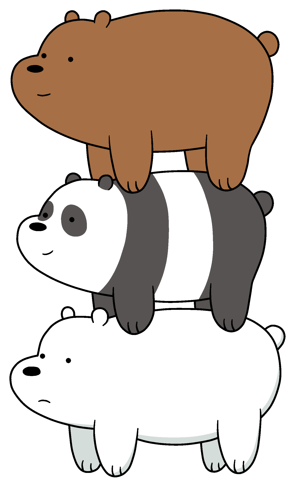
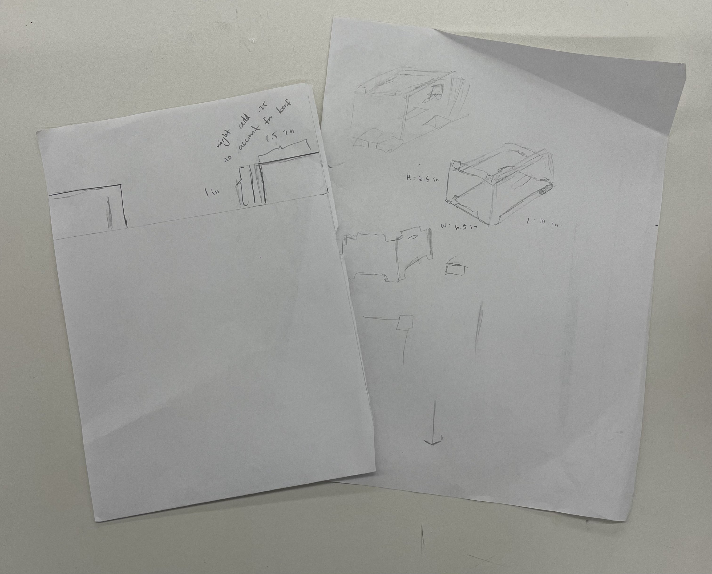
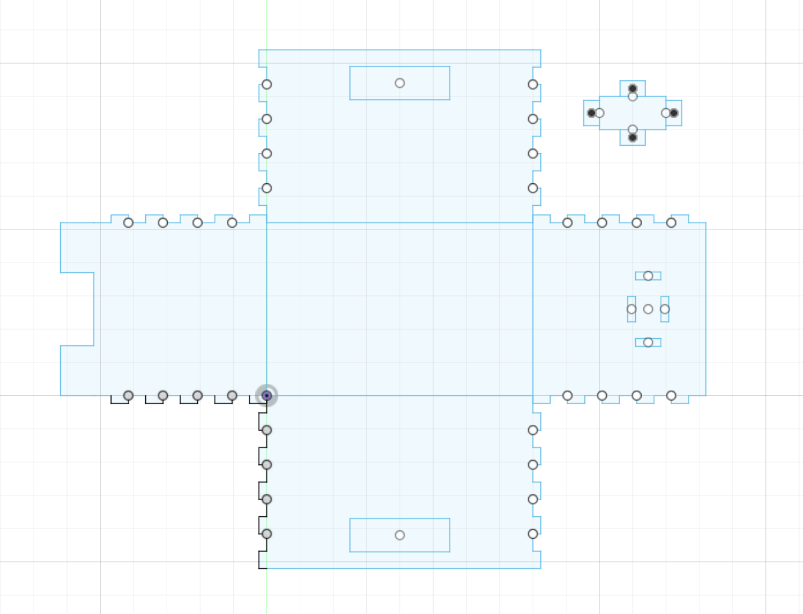
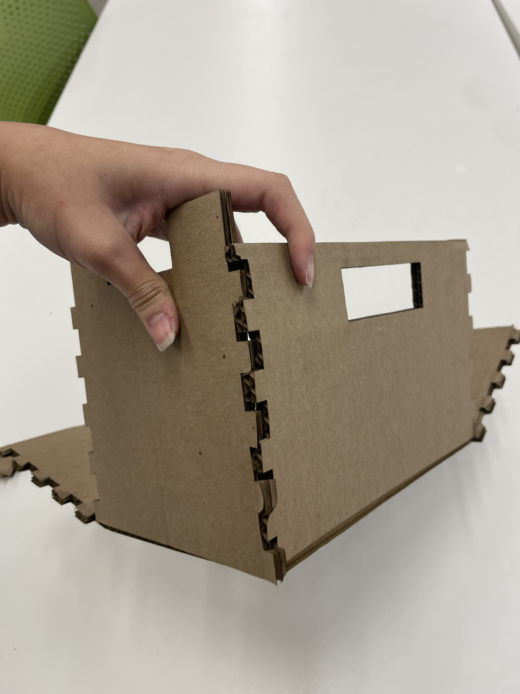
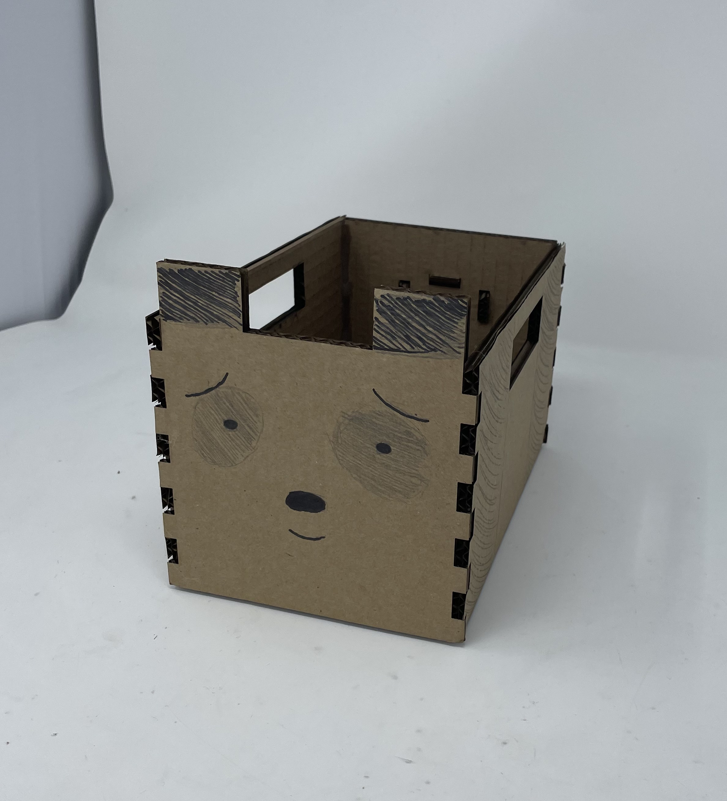
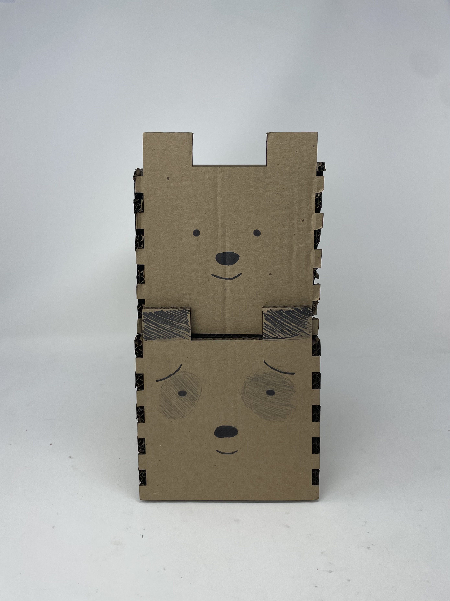

<div class="textcontainer">
<p class="margin"> </p>
<h3>Week 2: 2D Design & Cutting</h3
<h4>Assignment 1: Make a Box</h4>
<p> This week, we were tasked with making a finger-joint cardboard box.
</p>
<p> Inspiration for my box: </p>

<p> From the cartoon We Bare Bears </p>
<p> Making the box:</p>
<p> To make my box, I first started by sketching out some ideas on paper. </p>

<p> Scrappy sketches and ideas for the box.</p>
<p> From here, I sketched the model on Fusion 360. </p>

<p> First Iteration: </p>
<p> After laser cutting the first iteration of this print, the finger joints on some sides of the box were slightly misaligned. </p>

<p> Seeing this, I went back to edit my CAD model. There was an issue with the spacing between the finger joints because I
had hard-coded a number in instead of spacing based on the other dimensions of the box (thank you Bobby). After making some
adjustments to the spacing between all the finger joints and making sure they are consistent, I cut my second iteration.
</p>
<p> Second Iteration: </p>

<p> I salvaged the first box and now have 2/3 bears! </p>

<p> Future Iterations: </p>
<p> For future iterations, I'd like to make add feet to to the box, and a small internal rim to allow the bears to really
stack!
</p>
<p class="margin"> </p>
<div class="flexrow">
<a id="btn" href="./temp.zip" download>Test Download Button
</a>
</div>
<p class="margin"> </p>
</div>